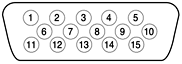

|
PATH |


The iMac computer has a port for an external video monitor. The external monitor shows the same information as the built-in display, a mode sometimes called hardware video mirroring. The external monitor supports only the display resolutions that are available on the internal monitor, as shown in Table 3-4.
The connector for the analog video monitor is a three-row DB15 connector (DB9/15, also called mini sub D15) for use with a VGA, SVGA, or XGA monitor. Figure 3-3 shows the pin configuration and Table 3-5 lists the signals and pin assignments.
Figure 3-3 Video connector
The connector on the monitor cable must fit into an opening in the computer's enclosure. The maximum dimensions of the connector's overmold are 34.81 mm (1.370 inches) wide and 15.40 mm (0.606 inches) high; no additional tolerance is allowed. The dimensions are symmetrical about the mounting screws; in other words, the horizontal and vertical center lines of the overmolding coincide with the center lines of the mounting screws.
© 2001 Apple Computer, Inc. (Last updated July 18, 2001)